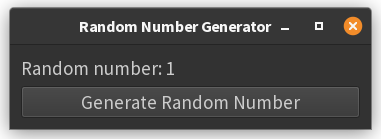

1. Introduction to Event Handling¶
Event handling is central to creating interactive GUI applications. In PyQt, events-such as button clicks, mouse movements, or key presses-are managed using a powerful mechanism called signals and slots. This system allows you to respond to user actions in a clean and decoupled way[1][4][5].
- Signal: An event notification emitted by a widget (e.g., a button emits a signal when clicked).
- Slot: A Python function or method that is called in response to a signal.
When a signal is emitted (for example, when a button is clicked), any connected slot is executed. This is the core of event-driven programming in PyQt[1][4][5].
Events Implemented Using Signals in Qt¶
In Qt (and therefore PyQt), most user actions (events) are implemented as signals. Widgets emit signals when something happens (like a button being clicked), and you connect these signals to slots (functions) to define what should happen in response[1][4][5].
Example: Button Click Displays a Random Number¶
Below is a minimal PyQt6 example with a button and a label. When the button is clicked, a random integer between 1 and 100 (inclusive) is displayed in the label.
import sys
import random
from PyQt6.QtWidgets import QApplication, QWidget, QVBoxLayout, QPushButton, QLabel
class RandomNumberApp(QWidget):
def __init__(self):
super().__init__()
self.init_ui()
def init_ui(self):
self.layout = QVBoxLayout()
self.label = QLabel("Click the button to get a random number!", self)
self.button = QPushButton("Generate Random Number", self)
self.layout.addWidget(self.label)
self.layout.addWidget(self.button)
self.setLayout(self.layout)
# Connect the button's clicked signal to the slot (handler function)
self.button.clicked.connect(self.show_random_number)
def show_random_number(self):
number = random.randint(1, 100)
self.label.setText(f"Random number: {number}")
if __name__ == "__main__":
app = QApplication(sys.argv)
window = RandomNumberApp()
window.setWindowTitle("Random Number Generator")
window.show()
sys.exit(app.exec())

Key Points:
- The
clickedsignal of the button is connected to theshow_random_numbermethod, which is called every time the button is pressed[4]. - The application uses
app.exec()to start the event loop, as required in PyQt6[4]. - All widgets are imported from
PyQt6.QtWidgets[4][5].
This is the recommended way to handle events (signals and slots) in PyQt6[4][5].
Summary¶
- PyQt uses signals and slots for event handling.
- Signals are emitted by widgets when events occur (like a button click).
- Slots are functions that respond to those signals.
- Connecting signals to slots allows you to define interactive behaviors in your GUI[1][4][5].
This example demonstrates the basic pattern you’ll use throughout PyQt development: connect widget signals to your own functions to make your application respond to user actions.
References
- [1] https://www.tutorialspoint.com/pyqt/pyqt_signals_and_slots.htm
- [2] https://www.tutorialspoint.com/pyqt/pyqt_event_handling.htm
- [3] https://www.pythonguis.com/tutorials/pyqt-signals-slots-events/
- [4] https://blog.heycoach.in/pyqt-event-handling/
- [5] https://zetcode.com/gui/pyqt5/eventssignals/
- [6] https://www.pythonguis.com/tutorials/pyqt-signals-slots-events/
- [7] https://www.youtube.com/watch?v=N2JfygnWJaA
- [8] https://doc.qt.io/qt-6/signalsandslots.html
- [9] https://www.youtube.com/watch?v=3t8KhIdSGYQ
- [10] https://www.techwithtim.net/tutorials/python-module-walk-throughs/pyqt5-tutorial/buttons-and-events
- [11] https://www.linkedin.com/pulse/how-handle-widget-events-using-pyqt-signal-slot-mechanism-garcia
- [12] https://stackoverflow.com/questions/72962792/brief-explanations-of-using-pyqt5-slots-signal-emit-and-connect
- [13] https://www.w3resource.com/python-exercises/pyqt/pyqt_event_handling.php
- [14] https://www.youtube.com/watch?v=yS_4PSRyovk
- [15] https://www.tutorialspoint.com/pyqt5/pyqt5_signals_and_slots.htm
- [16] https://pythonpyqt.com/pyqt-events/
- [17] https://stackoverflow.com/questions/18567988/why-signals-and-slots-in-pyqt
- [18] https://stackoverflow.com/questions/72713580/how-to-create-a-new-label-when-a-button-is-pressed-in-pyqt5
- [19] https://stackoverflow.com/questions/45924498/how-to-change-label-text-until-pushbutton-clicked-in-pyqt/45924703
- [20] https://forum.qt.io/topic/138880/strange-behaviour-of-qpushbutton
- [21] https://stackoverflow.com/questions/10730131/create-dynamic-button-in-pyqt/10730209
- [22] https://www.youtube.com/watch?v=9pl55MxZlG4
- [23] https://discuss.streamlit.io/t/randomly-generate-a-number-and-save-this-number-and-user-input/20615
- [24] https://www.pythonguis.com/tutorials/creating-multiple-windows/
- [25] https://www.qtcentre.org/threads/67719-(PyQt4)-How-to-update-a-label-with-a-random-value-from-a-list
- [26] https://realpython.com/python-gui-tkinter/
- [27] https://forum.qt.io/topic/111831/dynamica-buttons-in-pyqt5
- [28] https://forum.pythonguis.com/t/real-time-change-of-widgets/587
- [29] https://forum.qt.io/topic/130419/pyqt5-how-to-change-qpushbutton-qlabel
- [30] https://stackabuse.com/working-with-pythons-pyqt-framework/
- [31] https://doc.qt.io/qtforpython-6/tutorials/basictutorial/signals_and_slots.html
- [32] https://blog.heycoach.in/pyqt-signals-and-slots/
- [33] https://wiki.qt.io/Qt_for_Python_Signals_and_Slots
- [34] https://www.tutorialspoint.com/pyqt/pyqt_action_event.htm
- [35] https://community.esri.com/t5/python-questions/random-number-of-a-random-number/td-p/581091
- [36] https://www.reddit.com/r/learnpython/comments/gkylp6/pyqt5_update_label_on_button_click/
- [37] https://stackoverflow.com/questions/44355154/generate-a-new-random-number-on-button-click
- [38] https://forum.inductiveautomation.com/t/assigning-a-random-number-to-a-tag-on-a-button-click/15115
- [39] https://stackoverflow.com/questions/48416936/pyqt5-update-labels-inrun-time/48477755
- [40] https://stackoverflow.com/questions/56009884/how-to-have-qlabel-update-as-various-numbered-pushbuttons-are-clicked
Use of AI
Page written in part with the help of an AI assistant, mainly using Perplexity AI. The AI was used to generate
explanations, examples and/or structure suggestions. All information has been verified, edited and completed by
the author.